Screenshots
See the application
Click a picture for the full size. Each group links to the features behind it. To see it move, watch the videos.
Editing
More about this
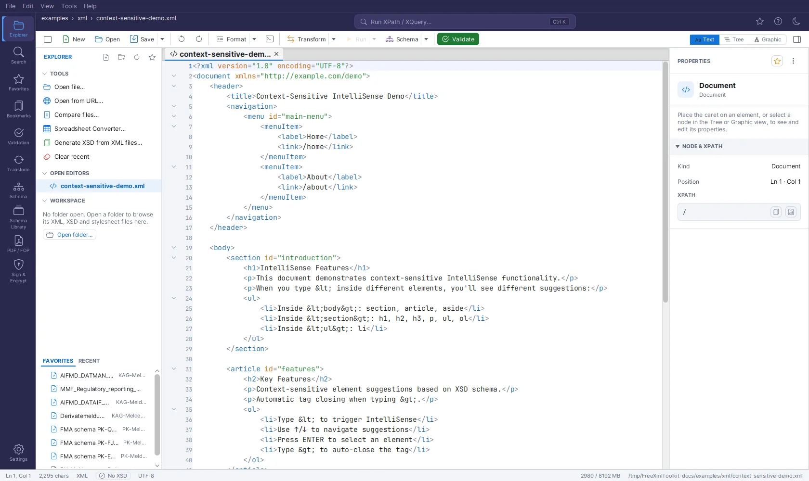


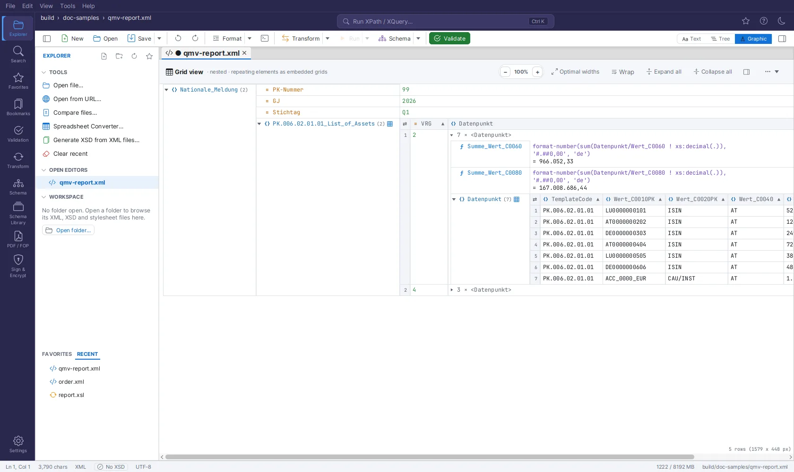

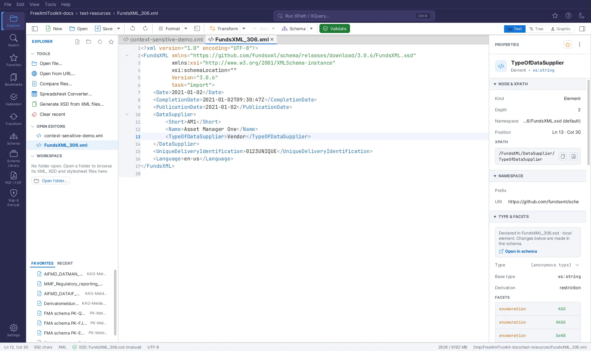


Schemas
More about this

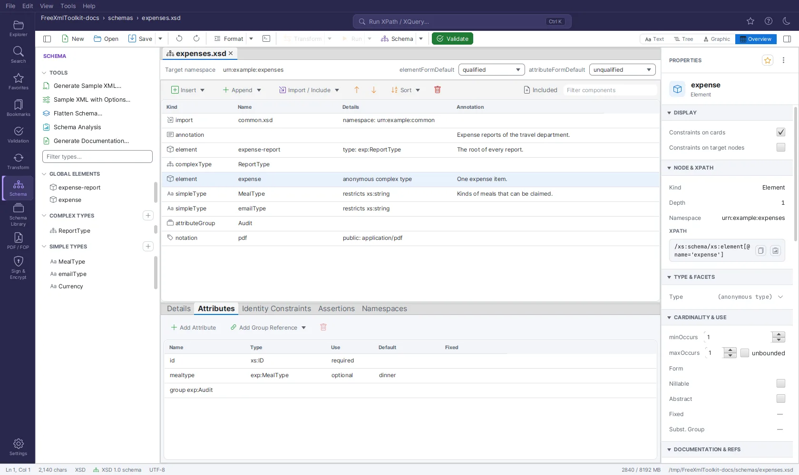

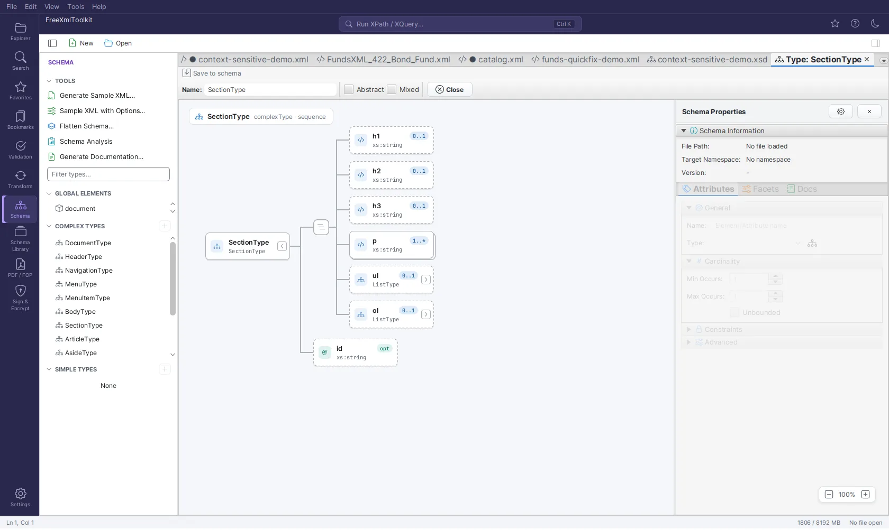


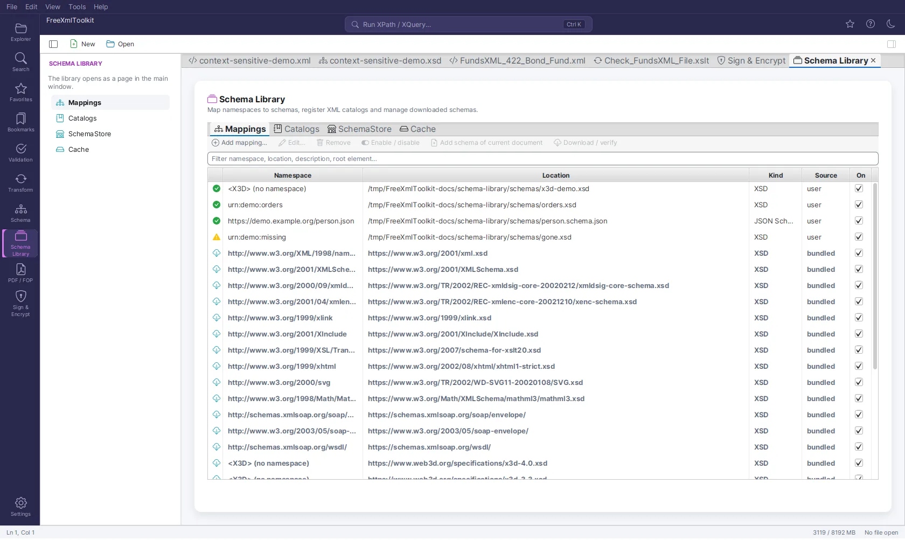
Validation
More about this


Transform and debug
More about this
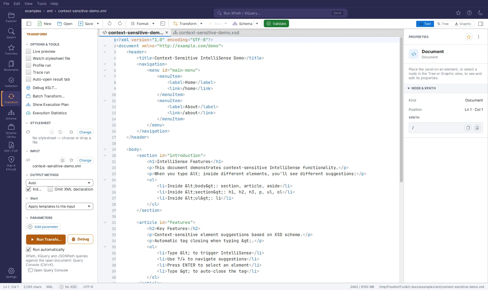


PDF and security
More about this

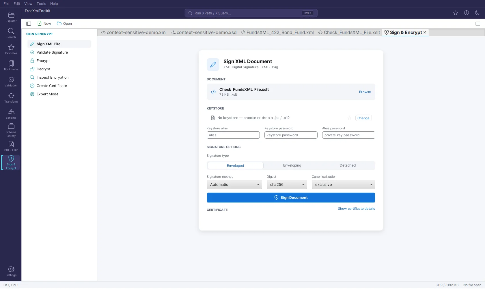


Compare and convert
More about this
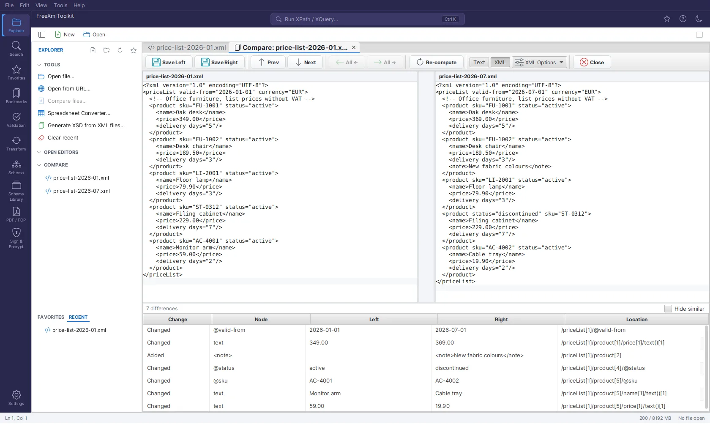


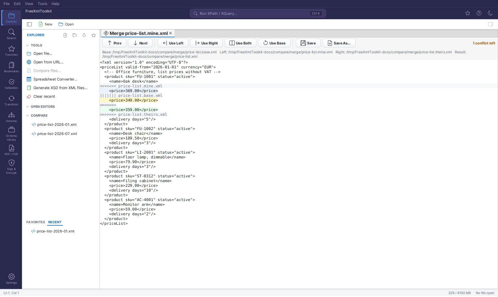

Projects
More about this

Industries
More about this


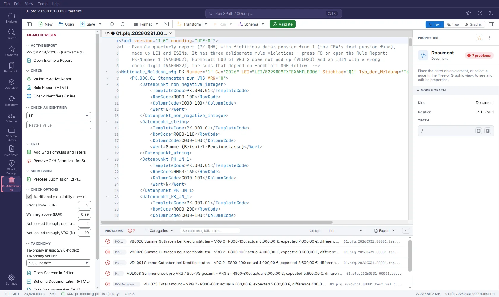

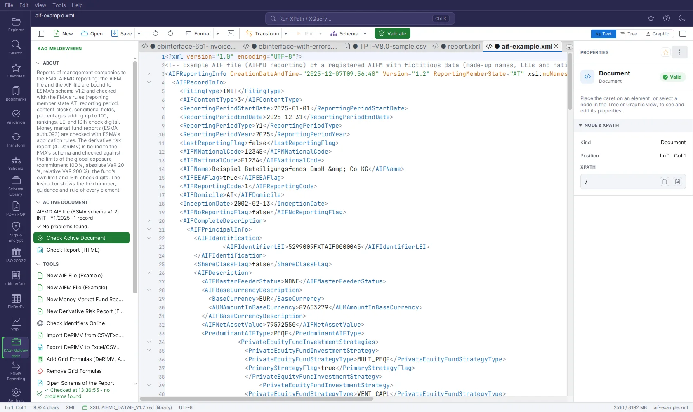

AI and appearance


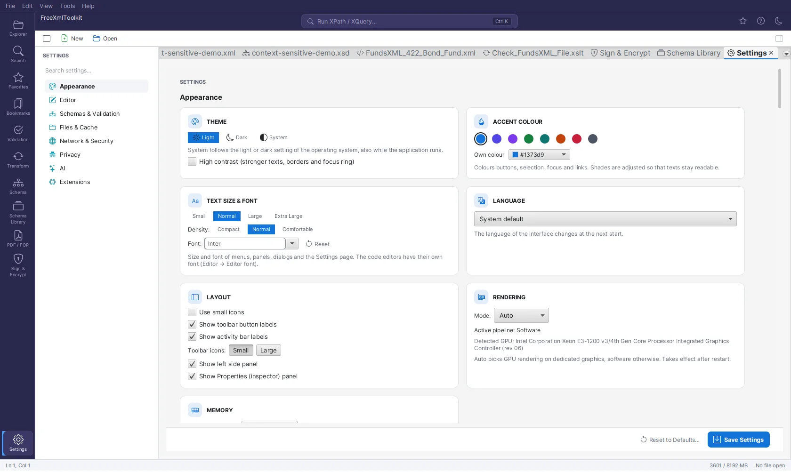

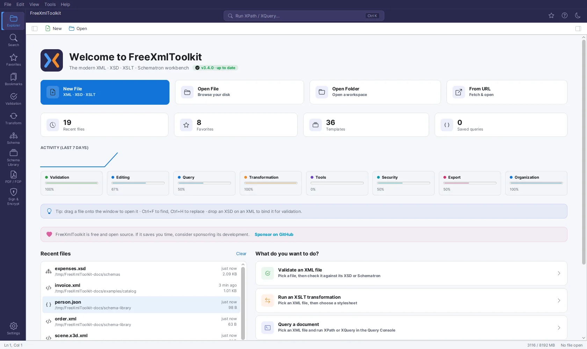
Try it yourself
Download, install, open a file. No account needed.